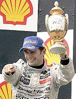
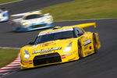

De: La Frikipedia, la enciclopedia extremadamente seria.
De: La Frikipedia, la enciclopedia extremadamente seria. De: La Frikipedia, la enciclopedia extremadamente seria.
| De la serie deportes para todos: | |||
| Super GT | |||
| |||
| Número de practicantes | Varios japos | ||
| ¿Deporte Olímpico? | No. | ||
| Campeonatos | GT500 y GT300 | ||
| ¿Donde se practica? | | ||
| ¿Control anti-dopping? | Cuanto más cargados vayan los japos, hay más espectáculos. | ||
| Riesgo de muerte | Los coches más bien son seguros. | ||
| Árbitro | Hay comisarios. | ||
| Hinchas | Todos los japoneses | ||
El Super GT es una categoría japonesa de coches de competición al estilo DTM alemán (de hecho hay rumores de que se van a juntar) solo que con Nissan GT-R, Honda HSC y Lexus SC430 en GT500 y Toyota Prius, Mazda RX8 y Subaru BRZ en GT300. Nuestro querido Pedrín fue el único aspañol en ganar este torneo en GT500 con un Toyota Supra del equipo Yellow Hat YMS. Los mejores equipos de esta competición son los de Nissan en general (nismo, Yellow Hat YMS, etc.) aunque Toyota y Honda tuvieron sus momentos de gloria (tan grandes como la honestidad de McLata). Antes la categoría se llamaba All-Japan GT pero la [ma]FIA les hizo cambiar el nombre al salir a circuitos fuera de Japón, en una de sus múltiples muestras de férrea autoridad. Se suele dar espectáculo porque son coches de 4.5 V8 y 500cv con un paso por curva brutal pero una punta más bien baja (290-315km/h).
En 1994 una pandilla de japoneses que estaban en Suzuka quisieron montar un campeonato de GT/Turismos porque la [ma]FIA les quitó su Grupo C querido y su campeonato japonés de Sport Prototipos y lo hicieron rapidito con los Toyota Supra, Honda NSX y Nissan R33 y le pusieron All-Japan GT Championship (JGTC para abreviar) y nuestro Pedro ganó el campeonato en 1996 con un Toyota Supra con el equipo excelentísimo: Yellow Hat YMS, y es que hay que ser bien excelente para hacer campeón a nuestro Pedrín.
Desde el '97 hasta el 2004 sin duda el mejor coche fue el Nissan R34 que ganó campeonatos (incluso después de haberse dejado de fabricarse ¡eso es echarle pelotas, joder!) con diferentes equipos, destacar a Nismo y Loctite (que lo pega todo) Zextel que fueron los que ganaron más veces, en 2005 Nissan cometió un gran error (inevitable, pero gran error), que fue cambiar el R34 por el 350Z, más nuevo pero sin una leyenda por detrás. En 2005 cabe destacar que los japos quisieron correr en China pero la [ma]FIA les dijo que no podían correr si no cambiaban el nombre de All-Japan (se nota que la [ma]FIA tiene una ferrísima autoridad y que no se le escapa un fallo), y entonces le pusieron Super GT.
En 2008 con el Nissan GT-R y el pasadón de Poyota, que se gastó un pastizal en hacer el Lotus Lexus SC430 adaptado a la normativa 2008 y montar otro en 2009, el resto de marcas ya tenían hechos los coches para normativas posteriores, Nissan y Honda los apisonaron pero allá cada uno... Para 2009 Honda sacó el HSV-010, pero Nissan siguió ganando y sobrado, podemos decir que no hay forma, que es la Scuderia Ferrari del Super GT.
Básicamente hay dos categorías para gustos.
Con FIA GT y con un paso por curva brutal, el único problema es que aunque haya un equipos a patadas, sólo hay tres marcas: Nissan, Honda y Lotus Lexus y eso hace que la gente se queje (sin sentido ninguno pero en Aspaña somos así) de monopolio (si, en algún sitio habrá un mono con polio).
Los Rayo McQueen de exibición y son menos rápidos pero aún así dan algo de espectáculo.
Sinceramente, aunque hubiese alguno buenísimo con Schumacheritis el único famoso es Pedro de la Rosa.
| Afoto | ¿Y este que hizo? |
|---|---|
|  | Nuestro Pedrín estuvo merodeando por el país de Pokémon a finales de los '90 con el equipo del Sombrero Amarillo y su Toyota y fue campeón en el 1996 antes de irse a la Fórmula 1 con el equipo de las flechas, esto último fue su mayor error |
En esto si que se puede sacar más jugo.
| Equipo | Algo destacable |
|---|---|
|  YMS |
Un equipo que ganó varios campeonatos pero el más sonado fue el de De la Rosa, al principio corrían con Toyotas pero en 2008 se cambiaron a Nissan |
| Nismo |
Sin duda el mejor equipo de la competición (Nismo es preparador de Nissan, como Abarth), lleva compitiendo desde el '98 y ganó sin problemas hasta el 2001, que perdió (lógicamente), entre el 2004 y el 2007 compitió con el Nissan 350Z, eso fue el peor error que hicieron pero en el 2008 recuperaron el GT-R y hicieron un doblete en la primera carrera, el resto del año siguieron arrasando y ahora están rondando por ahí con su número 23. |
| Woodone Advan |
El actual campeón del Super GT, usan un Nissan GT-R |
Lo bueno de esto es que todos ellos corren con GT-R
| | |||
|---|---|---|---|
|
Deportes
Deportistas
Competiciones
Otros
Artes Marciales
|
Autor(es):